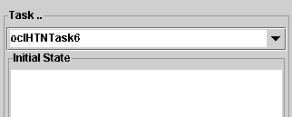
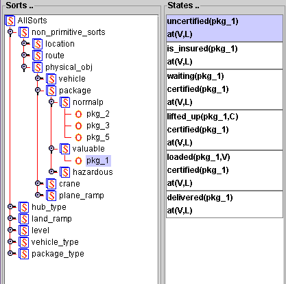
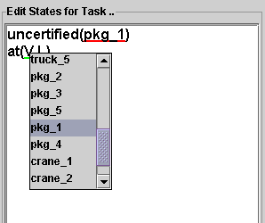
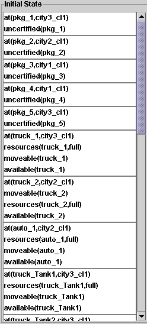
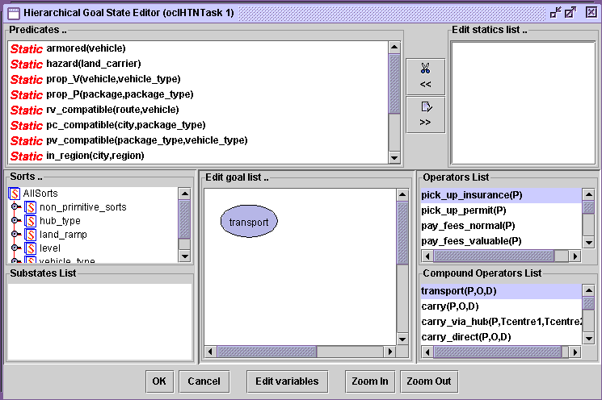

Create A Hierarchical Task
- Click on the button "New",
an input dialog box will appear. Type in a name "6" to represent the new
task. then a new task named "oclHTNTask_6" will appear in the "Task..." combo
box.

- Expend the tree to find
the object pkg_1, click on the object, all related sub states for
this object and its inheriated states will be partially instantiated and displayed
on the "states.." window.

- Click the state to bring
it to the editing window. Click on the variable "V" to highlight the
variable with green underline, in the mean time any associated variables
(with same sort) will be highlighted with red underline.
Right click on the green underlined variable, a popup list will appear with
two option list. Instantiate the variable by selecting the desired object
from the popup list. Be noticed that right click on a predicate (rather than
any green underlined variables) will allow user to delete the predicate;

- Click button "Add Initial"
to add the current edited state as one of the initial states.
- Repeat previous procedure
to build initial state as shown below.

- Click button "Goal" to
bring the Hierarchical Goal State Editor up. Drag transport(P,O,D) method
to the Edit goal list... canvas and release the mouse to form the goal for
the current task. Choose "OK" to commit.

- When all editing procedures
are finished, click "Verify Tasks" button to verify tasks. If all states
are valid then click "Commit" button to add this task to the "translog" domain.
- Close the "Tasks View"
window.
 back to the tutorial main page
back to the tutorial main page